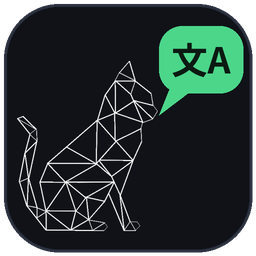
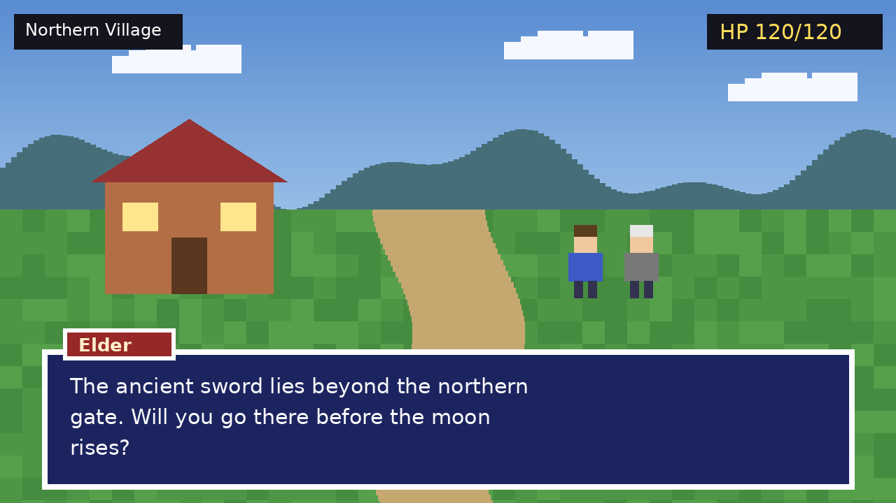
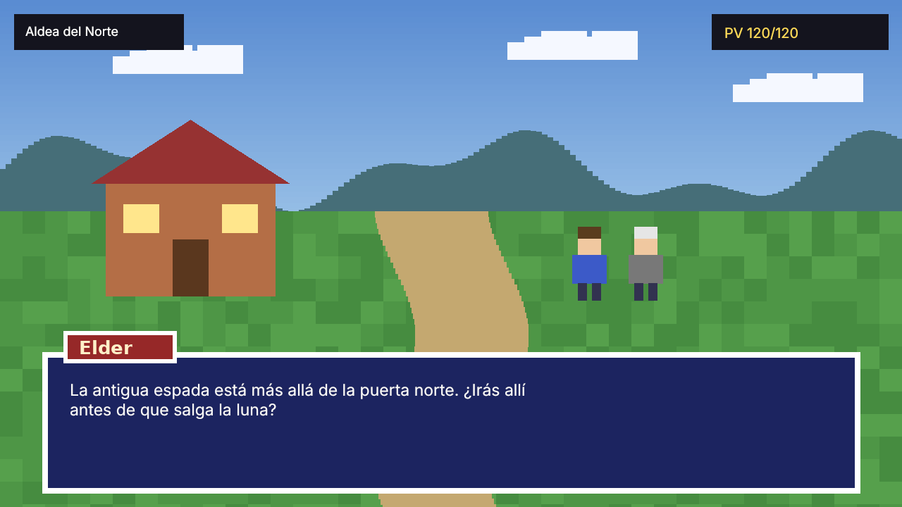
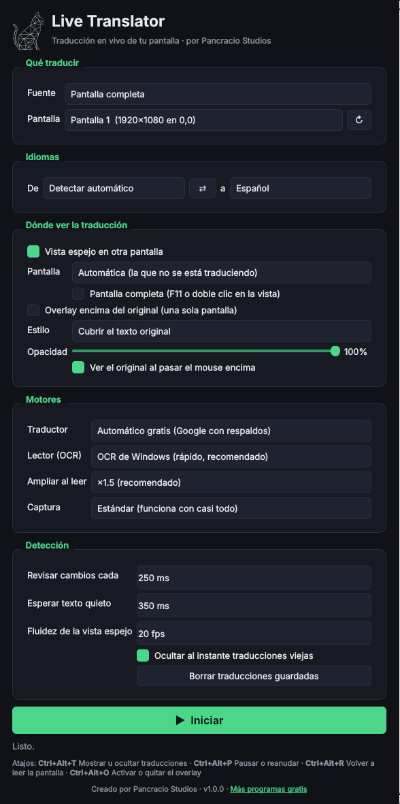

Live Translator
Traduce en vivo el texto de tu pantalla y lo muestra en el mismo lugar. Translates on-screen text live and shows it in the same place.


Qué haceWhat it does
En otro monitor ves tu juego o página con el texto ya traducido en su lugar. Funciona con 2, 3 o más pantallas.On another monitor you see your game or page with the text already translated in place. Works with 2, 3 or more screens.
Una capa transparente encima del original. Los clics pasan al juego y, al pasar el mouse, ves el texto original.A transparent layer over the original. Clicks go through to the game, and hovering shows the original text.
Más de 40 idiomas, de cualquiera a cualquiera: inglés, japonés, coreano, chino, francés, alemán…40+ languages, any to any: English, Japanese, Korean, Chinese, French, German…
Espera a que el diálogo termine de escribirse y oculta al instante las traducciones viejas.Waits for dialogue to finish typing and instantly hides outdated translations.
Usa el lector de texto de Windows y traductores gratuitos. Lo ya traducido se guarda y sale al instante.Uses Windows' built-in text reader and free translators. Past translations are saved and appear instantly.
Sin cuentas ni telemetría. Ajustes y caché se quedan en tu equipo.No accounts, no telemetry. Settings and cache stay on your computer.
Cómo empezarGetting started
- Descarga y abre el instalador. Si Windows avisa «Windows protegió tu PC», elige Más información → Ejecutar de todas formas.
- Abre Live Translator desde el menú Inicio.
- Elige qué traducir: pantalla completa, una ventana o una región (por ejemplo, la caja de diálogos).
- Elige los idiomas y dónde ver la traducción: vista espejo, overlay o ambos.
- Presiona Iniciar.
- Download and run the installer. If Windows shows "Windows protected your PC", choose More info → Run anyway.
- Open Live Translator from the Start menu.
- Choose what to translate: full screen, a window or a region (e.g. the dialogue box).
- Pick the languages and where to see the translation: mirror view, overlay or both.
- Press Start.

Atajos de tecladoKeyboard shortcuts
| Ctrl+Alt+T | Mostrar u ocultar traduccionesShow or hide translations |
| Ctrl+Alt+P | Pausar o reanudarPause or resume |
| Ctrl+Alt+R | Volver a leer la pantallaRe-read the screen |
| Ctrl+Alt+O | Activar o quitar el overlayToggle the overlay |
| F11 / H / EspacioSpace | En la vista espejo: pantalla completa / ver original / pausaIn mirror view: fullscreen / show original / pause |
Preguntas frecuentesFAQ
Dice que no tiene el OCR de japonés (u otro idioma)It says the OCR for Japanese (or another language) is missing
Windows necesita el paquete de lectura de texto de ese idioma. Live Translator te ofrece instalarlo con un clic (pide permiso de administrador). Español e inglés suelen venir incluidos.Windows needs the text-recognition pack for that language. Live Translator offers to install it with one click (admin permission required). English usually comes preinstalled.
Aparece «Google limitó las peticiones»"Google rate-limited the requests" appears
Los traductores gratuitos tienen límites. La app cambia sola a otro servicio y reintenta después. Para uso intenso, usa DeepL con su clave gratuita (500 000 caracteres al mes).Free translators have limits. The app switches to another service and retries later. For heavy use, try DeepL with its free key (500,000 characters per month).
¿Funciona con cualquier juego?Does it work with every game?
Con la gran mayoría en ventana o ventana sin bordes. Algunos juegos con anti-trampas o en pantalla completa exclusiva bloquean la captura.With most games in windowed or borderless mode. Some games with anti-cheat or exclusive fullscreen block capture.
¿Cómo lo desinstalo?How do I uninstall it?
Desde Configuración → Aplicaciones → Live Translator → Desinstalar. Te preguntará si también quieres borrar tus ajustes.From Settings → Apps → Live Translator → Uninstall. It will ask whether to also delete your settings.
VersionesVersions
| VersiónVersion | FechaDate | NovedadesWhat's new | DescargaDownload |
|---|---|---|---|
| 1.0.0 | 2026-11-13 | Primera versión pública.First public release. NotasNotes | Setup.exe |
SHA-256 (LiveTranslator-Setup-1.0.0.exe): SHA256_PENDIENTE
PrivacidadPrivacy
Para traducir, el texto que el programa lee de tu pantalla se envía al servicio de traducción que elijas (Google, Microsoft o DeepL). No se envían imágenes de tu pantalla. Live Translator no tiene cuentas, anuncios ni telemetría. Política completa.
To translate, the text the program reads from your screen is sent to the translation service you choose (Google, Microsoft or DeepL). Screen images are never sent. Live Translator has no accounts, ads or telemetry. Full policy.